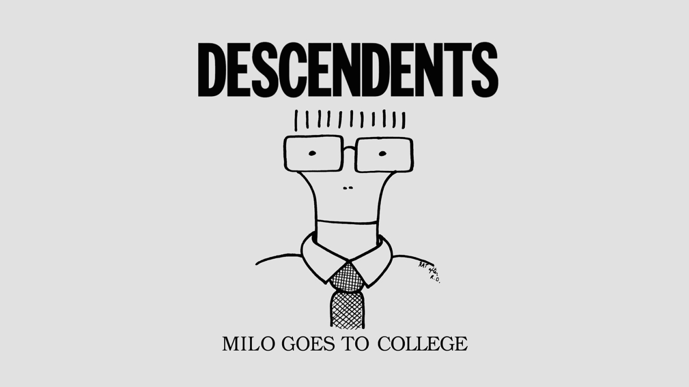

Descendents es una banda de punk rock formada en 1977 en Manhattan Beach, California. Son considerados uno de los grupos más influyentes del punk melódico y el hardcore, siendo pioneros en fusionar la velocidad y agresividad del hardcore con melodías pegajosas y letras cotidianas sobre el amor, el café, la comida y la alienación adolescente. Su formación más icónica incluye a Milo Aukerman en la voz, Frank Navetta y luego Stephen Egerton en la guitarra, Karl Alvarez en el bajo y Bill Stevenson en la batería, quien es considerado uno de los bateristas más influyentes del punk.
A lo largo de su carrera, con varias pausas y reuniones, lanzaron discos fundamentales como Milo Goes to College (1982), I Don't Want to Grow Up (1985) y ALL (1987), que definieron el sonido de generaciones enteras de bandas como Bad Religion, NOFX, Blink-182 y muchas otras. Su máscara icónica, el rostro caricaturesco de Milo, se convirtió en un símbolo reconocible del punk melódico mundial. Aunque nunca alcanzaron fama comercial masiva, su legado dentro del punk es inmenso, y siguen siendo activos hoy en día con una energía que pocas bandas de su era logran mantener. Puedes leer más en este enlace.
| Álbum | Sello | Año |
|---|